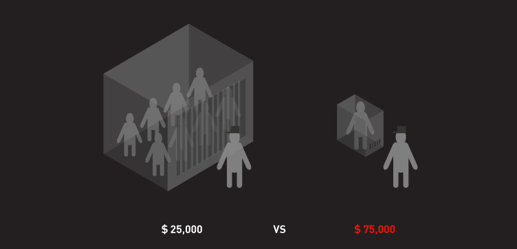
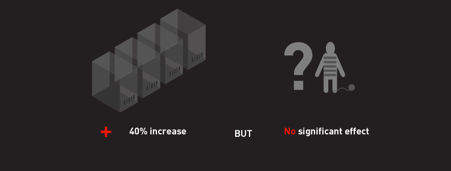

But 48 hours is nothing compared to what is common practice in US prisons, where prisoners have spent upwards of 41 years in solitary confinement and TK DURATION is commonplace.
And despite the demonstrated harm of solitary confinement, prisoners are regularly sent into solitary confinement by corrections personnel for even the mildest of infractions or cause, without the due process of a trial or a jury. (VISUAL OF THE PROCESS FLOW LEADING TO SOLITARY CONFINEMENT, eg. New York 'Tickets', California 'Validation'. Although proponents say that solitary is necessary to combat prison violence, research shows the opposite to be true.
A prisoner in solitary costs on average TK more than a normal prisoner. They need more guards, more expensive facilities and more psychiatric help. Evidence also shows that it leads to lasting psychological damage that is counter productive to reform.
The effects of long-term isolation last long beyond the prisoner's time "in the box." Solitary confinement “crushes your spirit [...] more effectively than any other form of mistreatment," says Senator John McCain, a former prisoner of war. "When you leave solitary, even going back into the general population, you feel like an outcast among outcasts," says James Burns, a former teenage prisoner. Maine and Mississippi have radically decreased their segregated numbers but New York and California have TK numbers. Penitentiaries from Maine to Mississippi have moved away from this practice. States like New York and California continue a program that does more harm than good?
-Cost: --$75K per inmate per year --Average 6.8 years ~ 500K per prisoner --Cost: $70-$200K Building costs - Comparatively NYU education is:
 -Cost: --$75K per inmate per year --Average 6.8 years ~ 500K per prisoner --Cost: $70-$200K Building costs - Comparatively NYU education is:
-Cost: --$75K per inmate per year --Average 6.8 years ~ 500K per prisoner --Cost: $70-$200K Building costs - Comparatively NYU education is:
Deformed Not Reformed is a campaign to bring awareness to the abuse of solitary confinement in U.S. prisons. The project was conceived by Michael Keller, Adam Pearce, Hanna Yoon, Tristan Aubert, Michael Thompson, and Sue Apfelbaum as part of the Re3 StoryHack at Parsons the New School for Design on October 5–6, 2013, with Jean Casella and Five Mualimmak of Solitary Watch as advisers.